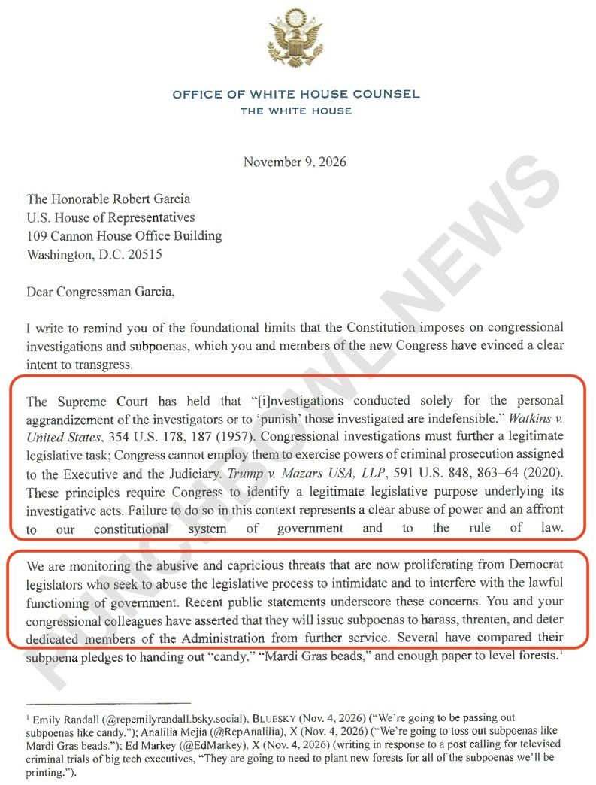
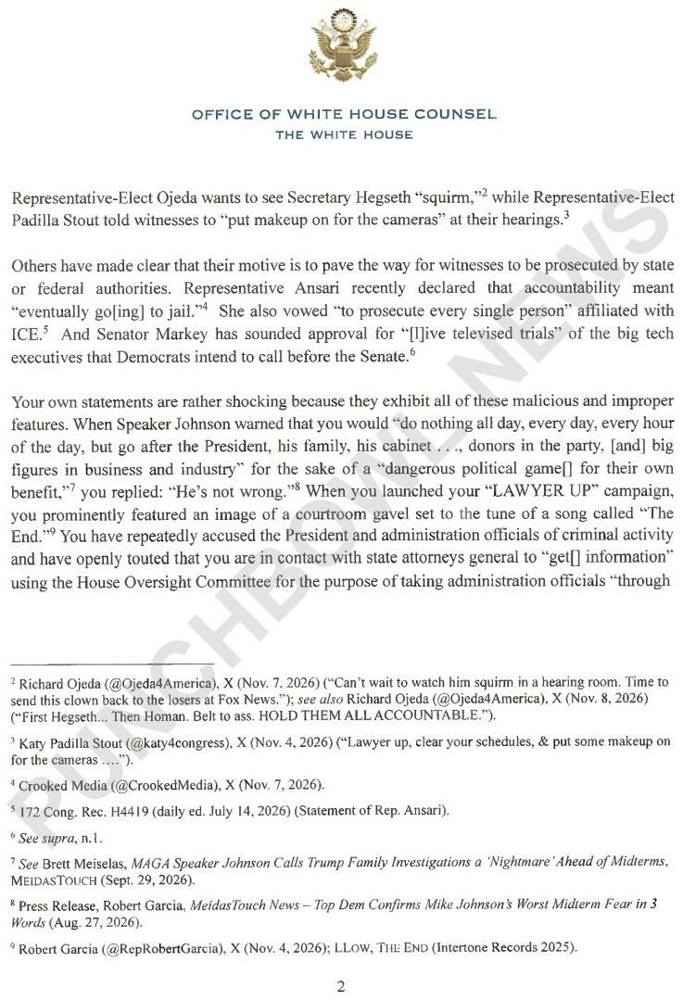
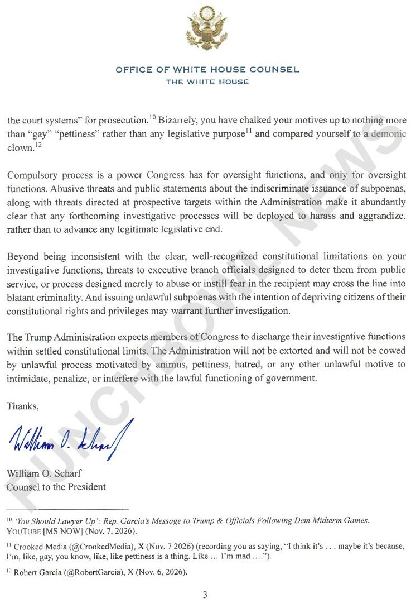
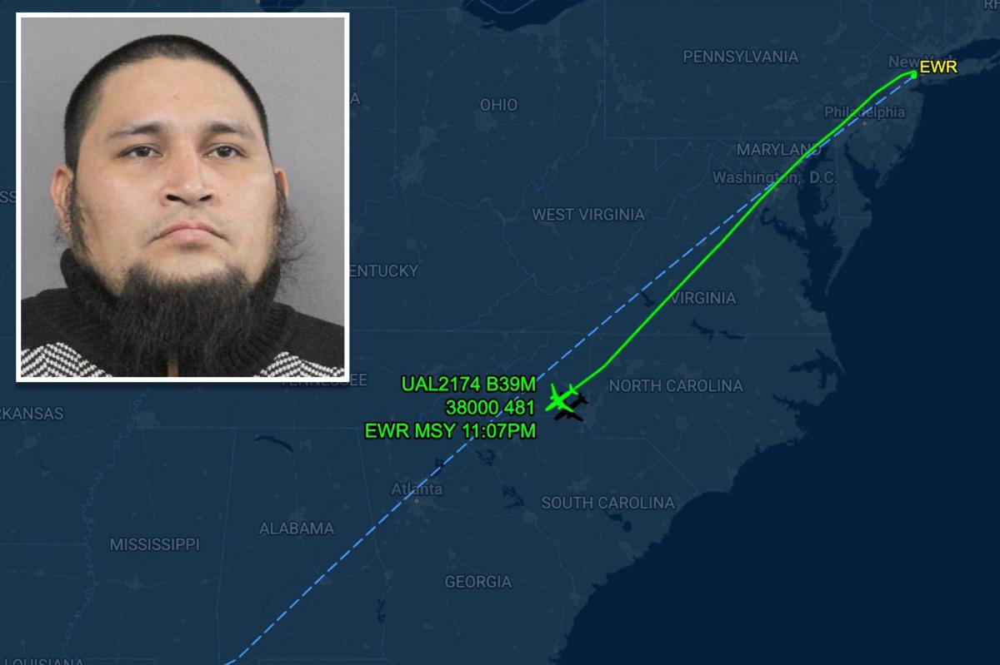

JUST IN: Marco Rubio declares there is “no need” for further major combat operations against Iran.
🚨JUST IN🚨
The White House has sent a warning letter to incoming House Oversight Committee chair Rep. Robert Garcia warning that some of the new Democratic majority’s investigations could cross into criminal behavior.
The letter, penned by WH counsel Will Scharf, seems to be taking an aggressive stance which likely means the White House intends on getting aggressive for Democratic oversight when they take the majority.
The letter asserts that the Democratic probes will be aimed at harassing the WH rather than serve any valid legislative end.
"We are monitoring the abusive and capricious threats that are now proliferating from Democrat legislators who seek to abuse the legislative process to intimidate and to interfere with the lawful functioning of government. Recent public statements underscore these concerns. You and your congressional colleagues have asserted that they will issue subpoenas to harass, threaten, and deter dedicated members of the Administration from further service."
SOURCE: Punchbowl News



ALERT: Kennedy family files lawsuit to prevent Trump from building a 250-foot arch, says it would “permanently cast a shadow” on the family’s graves.
Norway now has more than 2,000 underwater AI laser robots shooting lice off its salmon
they're made by a company called Stingray, and they already guard more than 50 million salmon and trout 24/7
the reason is sea lice, tiny parasites that latch onto salmon and feed on them
as few as 11 can kill a small fish, and one pen can hold 150,000 salmon
the usual fix is pumping the fish out and blasting them with warm water or water jets to knock the lice off
but the handling is so rough that Norway's fish health report ranks it the top cause of death in full-grown farmed salmon
so instead, Stingray puts a robot inside the pen that hunts lice one at a time, all day:
> two cameras watch every salmon that swims past
> AI checks two frames to make sure it's really a louse
> then a green laser fires from up to 2 meters away
> the salmon's scales reflect the beam, so the fish swims off fine and the louse is dead
we now live in a world where AI lasers do pest control on your dinner lmao
JUST IN: OpenAI engineer reveals he's had Codex running for 26 days straight searching for the lost city of Atlantis, as “vibe archaeology” emerges as a new use for AI agents.
@SecScottBessent delivered keynote remarks at the National Committee on United States-China Relations gala.
"Trade must advance the interests of both parties without diminishing the sovereignty of either.
And it is precisely in that spirit that President Trump has approached our relationship with China."
Remarks from Secretary of the Treasury Scott Bessent at the National Committee on U.S.-China Relations Gala https://home.treasury.gov/news/press-releases/sb0688
JUST IN: 🇺🇸🇮🇷 Treasury Secretary Scott Bessent forced to relocate to US military base following threats against his life from Iran.
BREAKING: Saudi Crown Prince Mohammed bin Salman has reportedly threatened to drive oil prices near zero by pumping at full capacity unless Russia stops sending Iran weapons that end up with the Houthis.
🚨 750 gallons of water flowing every MINUTE, and it's being reused.
CNBC goes inside the next generation of data center cooling technology, where water circulates in a closed loop instead of constantly drawing fresh water from local supplies.
BREAKING: Congress drops a BOMBSHELL REPORT on Jeffrey Epstein 💣
This is the TIP OF THE ICEBERG.
House Oversight Republicans release final report on Epstein investigation, clears Trump of crimes
Illegal immigrant ID'd as United flier accused of bomb threat, hijack attempt - was previously busted by ICE but judge let him go

Russia has effectively abandoned attempts to replace the dollar with China’s yuan under the pressure of US secondary sanctions, underlining the difficulties facing other nations looking for an alternative global currency https://www.bloomberg.com/news/articles/2026-11-11/russian-push-to-escape-dollar-for-yuan-collapses-under-sanctions
JUST IN: 🇺🇸 US credit card debt reaches new all-time high of $1.29 trillion.
🚨NEW: New York Stock Exchange Parent Sets Tokenized Stock Launch Date as Corporate Giants Sit Out
@ICE_Markets & @okx plan to launch tokenized stock trading venue November 23, with ETFs making up the bulk of the offering alongside crypto-linked stocks.
JUST IN: 🇷🇺 Russia's Central Bank says exchanges can begin cryptocurrency trading from November 17th.
JUST IN: Mamdani signs housing law requiring owners of certain NYC apartment buildings to give qualified nonprofits up to 90 days to pursue a purchase before listing publicly.
Bronx DA’s Office Told Prosecutors to Omit Child’s Age From Sex-Crime Pleas to Help Noncitizen Defendants Avoid Deportation
JUST IN: 🇪🇺 EU warns hackers could target everyday home appliances, including refrigerators.
BREAKING: Ilhan Omar's bodyguard reportedly indicted on felony charges.